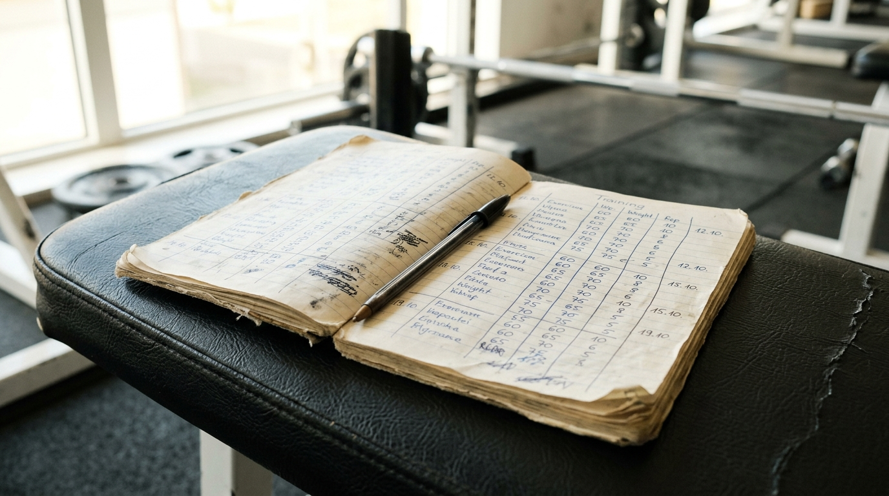
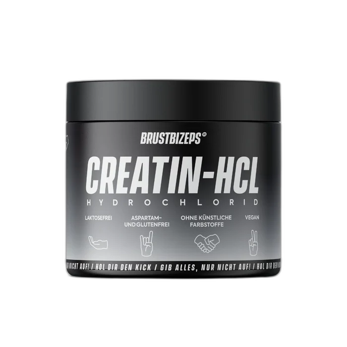

7 Gründe, warum dein Creatin nicht die erhoffte Wirkung zeigt
Du nimmst es seit Monaten, verpasst kaum einen Tag und stehst trotzdem ratlos vor dem Trainingsbuch. Creatin ist der am besten erforschte Zusatz im Kraftsport, aber bei dir passiert einfach nichts. Bevor du die Dose in den Müll wirfst und dich als Non-Responder abstempelst, lohnt sich ein Blick auf die Details. Oft liegt es nicht an deiner Genetik, sondern an Fehlern bei der Einnahme oder der Form des Pulvers.
Zu früh aufgegeben
Wer sich montags eine Dose kauft und am Freitag auf spürbare Fortschritte wartet, wird enttäuscht. Der Körper baut die Vorräte in der Muskulatur nur langsam auf. Bis die Speicher tatsächlich gefüllt sind, vergehen Wochen, nicht Tage.
Wer nach vierzehn Tagen genervt aufgibt, hört genau an der Schwelle auf, an der die eigentliche Wirkung überhaupt erst einsetzen könnte.
Nur an Trainingstagen genommen
Ein weit verbreiteter Irrtum ist die Annahme, Creatin funktioniere wie Coffein vor dem Workout. Creatin ist kein Booster für den schnellen Pump vor dem Satz, sondern ein Füllstand, den man halten muss.
Wenn du das Pulver nur an den drei oder vier Tagen nimmst, an denen du ins Studio gehst, sinkt der Spiegel an den restlichen Tagen wieder ab. Der Muskel wird so nie vollständig gesättigt, weil du die Vorräte ständig wieder leerlaufen lässt.
Auf das falsche Zeichen geschaut
Viele Trainierende warten vergeblich auf ein höheres Gewicht auf der Waage oder prallere Oberarme im Umkleidekabinen-Spiegel. Die Wirkung von Creatin zeigt sich jedoch nicht am Messband, sondern im Trainingsheft.
Du bist im letzten Satz Bankdrücken bisher immer bei der siebten Wiederholung eingebrochen, und plötzlich schaffst du die achte ohne fremde Hilfe. Genau dort findet die Veränderung statt. Wer nur auf seine Silhouette schaut, verpasst diesen Moment vollkommen.

Deine Speicher waren schon fast voll
Der Effekt hängt stark davon ab, wie du dich ernährst. Wer täglich große Portionen Rindfleisch, Schweinefleisch oder Lachs auf dem Teller hat, führt seinem Körper bereits über die normale Nahrung reichlich Creatin zu.
Deine Muskeln sind dadurch von Natur aus fast vollständig gesättigt. Die Luft nach oben ist minimal, weshalb der zusätzliche Schub schlicht ausbleibt. Wer dagegen wenig oder gar kein Fleisch isst, spürt nach der Sättigung einen deutlichen Unterschied in der Kraftausdauer.
Zu wenig Wasser zum Runterspülen
Ein gehäufter Messlöffel trockenes Pulver in den Mund, ein kleiner Schluck Leitungswasser hinterher und einmal kurz geschluckt. So landet ein zäher Klumpen im Magen. Ohne ausreichend Flüssigkeit kann sich das Pulver im Magenraum nicht verteilen. Wer hier am Wasser spart, macht sich die Einnahme unnötig schwer.
Das Pulver löst sich nicht
Du rührst das Glas akribisch um, trinkst es auf ex aus und blickst auf den Boden. Dort klebt immer noch eine dicke, weiße Schicht aus feinem Grieß. Dieser Rest wandert beim Spülen direkt in das Waschbecken.
Herkömmliches Monohydrat hat eine schlechte Löslichkeit und bildet in kaltem Wasser schwere Ablagerungen. Was als weißer Staub am Glasboden kleben bleibt, hast du schlicht nicht getrunken.
Der Magen macht Ärger
Ungelöste Kristalle, die den Weg durch die Speiseröhre schaffen, stellen den Magen vor eine Aufgabe. Sie lösen sich dort nur langsam auf und ziehen lokal Wasser an.
Die Folge ist ein spürbarer Druck im Oberbauch oder ein unangenehmer Blähbauch. Wer jedes Mal mit Magengrummeln auf der Trainingsbank liegt, verliert schnell die Lust daran. Viele hören genau wegen dieser Verträglichkeitsprobleme wieder auf.
Fünf davon liegen in deiner Hand
Die ersten fünf Punkte kannst du selbst abstellen. Du kannst dein Pulver täglich nehmen, genügend Wasser trinken, deine Erwartungen anpassen und das Trainingsheft im Blick behalten. Das kostet nichts außer Disziplin.
Gegen das Löslichkeitsproblem im Glas und das Drücken im Magen hilft Disziplin jedoch nicht. Das liegt schlicht an der Form von herkömmlichem Monohydrat.
Hier setzt BrustBizeps Creatin HCL an. Statt Pulver anzurühren, nimmst du Kapseln. Nichts bleibt am Glasboden kleben, kein Grieß knirscht zwischen den Zähnen. Laut Herstellerangabe ist Creatin-Hydrochlorid 59-fach besser löslich als klassisches Monohydrat. Es bildet keine ungelösten Klumpen, die im Magen liegen und dort Wasser ziehen. Eine Ladephase fällt weg.
Jede Kapsel enthält 1000 mg reines Creatin-Hydrochlorid. Die Tagesdosis beträgt 4 Kapseln, die du entweder vor dem Training oder aufgeteilt morgens und abends nimmst. Eine Dose kostet 35,90 Euro, enthält 140 Kapseln und reicht genau 35 Tage.

Versand aus Deutschland